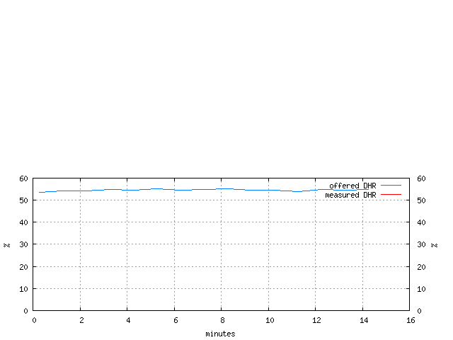
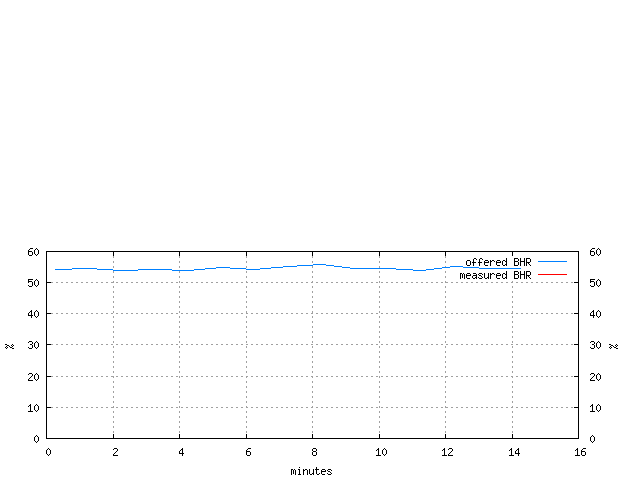

The hit ratios table shows measured hit ratios. Hits are calculated based on client- and server-side traffic comparison. Offered hits are counted for 'basic' transactions only (simple HTTP GET requests with '200 OK' responses). Measured hit stats are based on all transactions. Thus, 'offered' hit ratio are not the same as 'ideal' hit ratio in this context.
Measured hit count or volume is the difference between client- and server-side traffic counts or volumes. DHR, Document Hit Ratio, is the ratio of the total number of hits to the number of all transactions. BHR, Byte Hit Ratio, is the ratio of the total volume (a sum of response sizes) of hits to the total volume of all transactions. Negative measured hit ratios are possible if server-side traffic of a cache exceeds client-side traffic (e.g., due to optimistic prefetching or extra freshness checks) and if side measurements are out-of-sync. Negative measured BHR can also be due to aborted-by-robots transactions.
A less accurate way to measure hit ratio is to detect hits on the client-side using custom HTTP headers. A hit ratio table based on client-side tricks is available elsewhere.
| Client Side Hit Ratios | DHR (%) |
BHR (%) |
|---|---|---|
| offered | 54.67 | 54.59 |
| measured | 0.00 | 0.00 |
| Document hit ratio trace |
|---|
|  |
| Byte hit ratio trace |
|---|
|  |
The hit ratios table shows offered and measured hit ratios from client side point of view. Polygraph counts every repeated request to a cachable object as an offered hit. Measured (cache) hits are detected using Polygraph-specific headers. All hits are counted for 'basic' transactions only (simple HTTP GET requests with '200 OK' responses).
DHR, Document Hit Ratio, is the ratio of the total number of hits to the number of all basic transactions (hits and misses). BHR, Byte Hit Ratio, is the ratio of the total volume (a sum of response sizes) of hits to the total volume of all basic transactions.
A better way to measure hit ratio is to compare client- and server-side traffic. A hit ratio table based on such a comparison is available elsewhere.
The 'Cheap proxy validation' table is similar to 'Hit Ratios' table. But it reflects hit ratios that would have been observed if successful (i.e., useless or in vein) validation initiated by the proxy were so 'cheap' that they could have been ignored rather than decrease measured hit ratio. The following formula is used to calculate cheap proxy validation hit ratio:
cheap_proxy_validation_hits = all_client_side_responses - all_server_side_responses + useless_server_side_proxy_validation_responses
cheap_proxy_validation_HR = cheap_proxy_validation_hits / all_client_side_responses